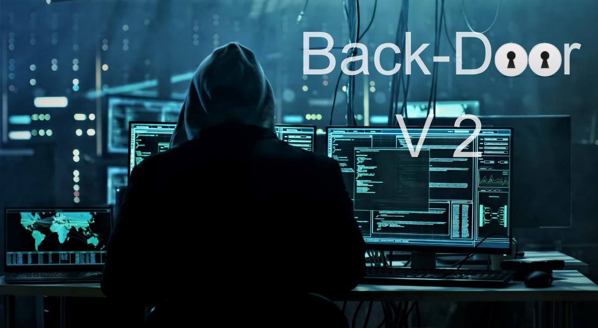

Exploration d'un Programme de Hacking :
Imaginez un programme informatique qui opère dans les coulisses, explorant discrètement les mystères des systèmes informatiques. C'est un outil conçu pour sonder les failles, avec une série de fonctionnalités sophistiquées pour une incursion numérique. Voici un aperçu de son utilisation :
Connexion Furtive :
Le programme commence par tenter de se connecter à des systèmes distants, une danse délicate pour établir un lien. Cette connexion furtive est une tentative d'ouverture de portes numériques sans être repéré.
Commandes Clandestines :
Une fois connecté, il attend des ordres spécifiques. Les commandes, telles que "infos" pour obtenir des détails système, "dl" pour extraire des fichiers, ou "cp" pour capturer des écrans, sont ses outils pour explorer et collecter des informations.
Exploration Discrète :
La commande "cd" lui permet de se faufiler à travers les répertoires du système cible, une escapade discrète pour découvrir des données sensibles sans déclencher d'alarmes.
Téléchargements Clandestins :
Utilisant la commande "dl", le programme peut dérober des fichiers précieux depuis le système distant. Une opération de vol de données, masquée dans l'ombre numérique.
Capture d'Écran et Espionnage Visuel :
La commande "cp" lui donne la capacité de voler des instantanés d'écran, une intrusion visuelle subtile pour surveiller l'utilisateur distant sans être détecté.
Enregistrement Vidéo Clandestin :
Avec la commande "rep", le programme peut enregistrer l'écran sous forme de vidéo. Une façon sournoise de documenter les activités du système, prêtes à être exploitées.
Exécution de Scripts Malicieux :
En utilisant des commandes PowerShell, le programme peut exécuter des scripts malveillants. C'est une ruse pour manipuler le système cible en silence, cherchant à obtenir des privilèges inattendus.
Sécurisation de la Communication :
Chaque interaction avec le serveur distant est protégée par des couches de cryptage, une précaution pour rester dans l'ombre et éviter toute détection.
Utilisation des Technologies :
Le programme exploite différentes bibliothèques et modules, tels que socket pour la communication réseau, subprocess pour l'exécution de commandes, PIL pour le traitement d'images, cv2 pour la capture d'écran et la vidéo, et mss pour l'enregistrement d'écrans.
